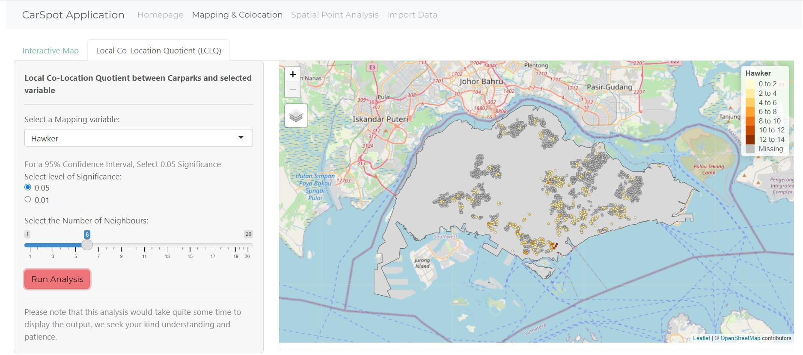

Overview
1. Theme: Spatial Points Analysis on URA Parking in Singapore
2. Abstract
To use geospatial analysis to analyze the spatial characteristics of HDB parking lots with other interests in the neighbourhoods of Singapore.
Our application enables users to derive insights from Point Pattern Analysis using Spatial Patterns Analysis and Local Co-location Quotient (LCLQ). It is helpful in uncovering whether the input data will be in regular, or clustered patterns or randomly distributed; or whether the distributions of data are dependent on each other. As for Local Colocation Quotient (LCLQ), it is useful in discovering the spatial association between HDB carparks and other interests like HDB, shopping malls and hawker centres.
In addition, our application can generate kernel density maps using the input datasets of car parks and run a range of hypothesis tests to derive meaningful conclusions on the distributions of car parks in Singapore. To better visualise how our application would work and look like, we have storyboards to depict the proposed application UI format.
3. Problem and Motivation
Singapore is a densely populated city-state that facing the challenge of providing adequate and efficient car park facilities to its residents and visitors. The spatial distribution of car parks across the city is uneven, with some areas experiencing high demand while others have surplus capacity.
Many people do not have enough knowledge on the underlying reasons for the spatial distribution of carpark facilities as they are not aware of Point Pattern Analysis techniques.
Hence, the team is inspired to create an application that enables users to:
Explore the capabilities and use cases of Point Pattern Analysis in the case of car parks in Singapore
Conduct Spatial Point Pattern Analysis to derive insights on the distributions of car parks
Conduct Co-location Analysis to derive insights on other interests such as HDB, shopping malls and hawker centres with car parks
4. Project Objectives
In this project, we will be proposing to create an analytic application that allows users to:
Better understand the capabilities and use cases of Point Pattern Analysis in the case of Car parks in Singapore
Conduct Spatial Point Patterns Analysis
1st Order (Kernel density estimation)
2nd Order Spatial Points Analysis (G and L functions)
Local Colocation Quotients (LCLQ)
Use these insights derived from the analysis for better understanding on the distribution of car parks in Singapore.
5. Main Features
Spatial Point Patterns Analysis
| Components | Parameters / Variables |
|---|---|
| Filters (Drop–down select) |
|
| Sliders |
|
Local Colocation Quotients (LCLQ)
| Components | Parameters / Variables |
|---|---|
| Filters (Drop–down select) |
|
6. Data Sources
7. Approach and Methodology
Data Preparation
- Importing in data
- Inspect and understand the data fields
- Data Wrangling - Missing values - Duplicates
Exploratory Data Analysis (EDA)
- Examine distribution of data points
- Check for outliers and anomalies in data
- Additional Data Wrangling if necessary
Point Pattern Analysis
Spatial Point Patterns Analysis: First-order and Second-order analysis
Kernel Density Estimation: Visualise and explore the intensity of points cluster
G-Function: Find out if the points are of either clustered pattern, regular pattern of randomly distributed pattern.
L-Function: Discover if the target point locations are independent from other points’ locations
Local Colocation Quotients (LCLQ)
- Find out the likelihood of the spatial association between 2 categorical vectors, for instance, HDB carparks and HDB blocks or Hawker Centres or Shopping Malls.
8. Review and Critic on Past Work
1) A Shiny Web Application for teaching model-based geostatistics to population health scientists

Summary:
- MBGapp is a Shiny Web Application that can be used to teach the different stages of a geostatistical analysis. In this case study, they make use of the Loa loa (eyeworm) data from Cameroon to analyse its rate of infection. Through this model-based geostatistics (MBG) study, they are able to study the public health problems by using spatially discrete survey data to investigate spatial variation in disease risk.
Learning Points:
MBGapp has a sidebar which has a ‘upload data’ functionality which allows users to upload their file in CSV format. Users are also prompted about the projection format so that the coordinates displayed can be accurate.
There are various tabs to view the distribution such as ‘Explore’, ‘Variogram’, ‘Estimation’, ‘Prediction’ and ‘Report’ to use for all-rounded analysis.
Linking back to our project:
We will ensure that users are able to upload their data properly for analysis
We could have different tabs for different functions to serve various purposes.
2. Analysing the global and local spatial associations of medical resources across Wuhan city using POI data
Summary
This article is about how colocation quotients are used to identify co-location between different medical resources in Wuhan from the global and local perspective.
LCLQ is a better analysis tool compared to GLCQ
Learning Points
The colocation quotient between several categories is more suited for urban analytics in contrast to other methods for evaluating spatial connection (such as Moran’s I for interval and ratio data).
The global colocation quotient (GCLQ) does not take spatial heterogeneity into account, it evaluates the direction and intensity of the global spatial connections between medical resources within and between categories throughout the research area (nonstationary colocation).
The power of the LCLQ is its ability to map the direction and intensity of local spatial associations, i.e., colocation within a local neighbourhood. Compared with the global colocation quotient, the LCLQ also produces maps that are easier to interpret.
Linking back to our project
We will apply the LCLQ to identify colocation between HDB carparks and different types of facilities in the neighbourhoods (e.g. HDB Buildings, Hawker Centers and Shopping Malls)
3. Spatial disparities of self-reported COVID-19 cases and influencing factors in Wuhan, China
Summary
- Kernel Density Estimation (KDE) method to investigate variations in the intensity of the COVID-19 epidemic across different spatial regions. Additionally, a geographically weighted regression (GWR) model to assess how the population dynamics, transportation and social interactions contributed to the spread of the COVID-19.
Learning Points
- Factors such as population density, transportation and social interactions greatly influence the choice of setting up health facilities that is crucial. Because the regions with elevated morbidity rates are predominantly located in commercial hubs and densely populated residential areas with greater population densities and more frequent social interactions.
Linking back to our project
We will offer a range of bandwidth values to enable to select the most suitable option for analysis
A functionality will be incorporated to aid users in comprehending the outcomes of their statistical analysis and functions.
9) Storyboards
Homepage
Spatial Statistical Functions
Kernel Density Estimation

Statistical Functions

Local Co-Location Quotients (LCLQ)

Data
10) Application Architecture
11) Timeline
12) User Interface Design
The design of CarSpot application consists of three main components namely graph, feature selection and interpretations.
With the navigation panels at the top most of the application, users will be able to navigate between the various uses of the application, from the homepage to mapping and co-location and spatial points analysis. The graphs will be loaded by default once users click into any of the tabs but to be able to change the different variables and for graphs to be loaded to their selection, they would have make changes to the variables or click on ‘Run Analysis’.
i. Interactive Choropleth Map
In this section, users are able to select the variable that they would like to map out and the size of the points for visualisation. The width of the borderline can also be set and the point colour can be set to the users’ preferred colour.
ii. Local Co-Location Quotient (LCLQ)
For the LCLQ analysis, users can also select the mapping variable and also the level of significance and number of neighbours as well to run the analysis.
iii. Kernel Density Estimation (KDE)
Users are able to choose the kernel and bandwidth methods, where the estimation will then be run according to their selection.
iv. G and L Function
Users will be able to adjust the number of simulations to their preference and the corresponding function graphs will be generated and displayed.
13) Demonstration (Case Study – Singapore Car Park Data)
There are many uses to which this application can be of use to, but one of the examples demonstrated will be the Singapore car park data. The choropleth maps of their locations is as follows and the same can be done to hawker centres, shopping malls and HDB flats data.

As for the co-location to the other interests, users are able to see and an example of their co-location relating to hawker centres is shown below.

As for Kernel Density Estimation, we are able to see the distribution of the car parks and how clustered they are.

Lastly, for the G and L function, they will be greeted by the graphs used with a number of simulations.

14) Discussion
15) Future Work
Enable the data import function
The app only functions with pre-loaded data at the moment. The use of the program would be greatly enhanced with the inclusion of a function that allows users to import their own data. To do this, a data import function that can read and handle different file formats such as CSV, shapefiles, or geodatabases would need to be created.
Utilise more SPPA techniques
In order to locate geographic clusters of parking lots, the app currently uses Local Co-Location Quotient. More spatial point pattern analysis methods, like Ripley’s K-function, and Network Contrained would assist reveal more details regarding the location of parking lots.
Leverage on Real-time data
At the moment, the app analyzes the spatial distribution of parking spaces using static data. The app’s utility would be greatly enhanced by the addition of an API that offers real-time information regarding parking availability and occupancy. Finding and connecting with pertinent real-time data APIs, such as those from parking management firms or municipalities, would be necessary to achieve this. Users could then use the app to find available parking spaces in real-time by viewing real-time parking information on a map.